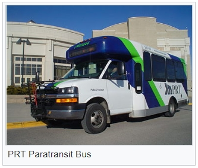

The option for Public Transportation in Soda Springs

The City of Soda Springs public transportation is offered through the Pocatello Regional Transit (PRT). There are
no regular bus routes available, rather it works by calling and scheduling the bus as you need, there is a fee.
The PRT offers citizens of Soda Springs transportation locally as well as to Caribou County as whole, Bear Lake
County and Bannock County.
Whether you need a ride to a friend's, a doctor appointment or to go shopping the PRT can help you get there and
home again.
If you are needing transportation to further locations or cities the Salt Lake Express offers many options for
reaching nearby locations such as Idaho Falls, American Falls and Twins Falls, as well as locations as far away as
Salt Lake City Utah, Boise Idaho, Helena Montana and even Jackson Wyoming.
The Salt Lake Express pickup station is located in McCammon at the Chevron Gas Station. You can arrange for the PRT
to take you to the Salt Lake Express bus stop in McCammon if needed...continue to full article